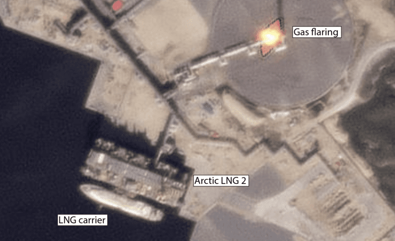
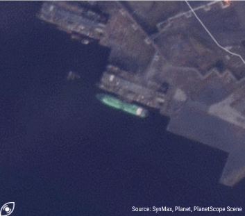
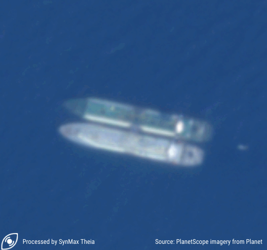

The Inception of Russia’s LNG Ghost Fleet
A Visual Deep Dive into how Russia-affiliated LNG Vessels Spoofed and Loaded At the Sanctioned Arctic-2 LNG Export Plant.
By Leslie Palti-Guzman & Vivek Patil
Russia Is Using Its Dark Oil ‘Expertise’ For Dark LNG
For years, the world has kept a close watch on Russia's shadow fleet of 600 oil tankers, vessels that have deftly navigated Western sanctions and continued to deliver crude to willing buyers in defiance of international regulations. Now in the global maritime waters, a new phenomenon is emerging: the assembling of a Russia-affiliated “dark LNG” fleet. Much like the shadow fleet that has reshaped the oil industry in recent years, this covert network could alter the liquefied natural gas (LNG) market with missing tonnes and illegal transactions. SynMax Leviaton tracked five conventional tankers Pioneer, Asya Energy, Everest Energy, Mulan (IMO 9234567, formerly Mulan Spirit), and New Energy that may have joined Novatek’s “dark LNG fleet” based on suspicious AIS patterns, recent ownership changes, flag-hopping, and risk-averse use of the Red Sea route- and which could be part of a coordinated effort to transport sanctioned LNG from Russia’s Arctic LNG 2 plant.
Conventional LNG tankers, such as Pioneer, will help Russia circumvent sanctions
These are the Automatic Identification System (AIS) signals reported by 19 year old Pioneer from 15th July to 6th August 2024 —a vessel built in 2005, with a capacity of 138,000 cubic meters of LNG. Formerly known as Pioneer Spirit, this ship recently changed its flag from Singapore to Palau in April 2024. The Pioneer LNG tanker’s journey has become a focal point in the beginning of dark LNG trade. SynMax believes that it has been chartered by Russia’s private LNG producer, Novatek.
Over 800 miles away, on August 1, 2024, the Pioneer (IMO 9256602) was spotted docked at the sanctioned ALNG2 plant, despite its AIS signals suggesting otherwise. It remained there through the weekend. The tanker had arrived at the Arctic LNG 2 terminal after what appeared to be a well coordinated spoofing operation as detected by SynMax Theia. By August 25, the Pioneer was still berthed at the terminal, presumably loading its cargo from the 6.6 mtpa ALNG Plant train 1. Interestingly, Pioneer is an ordinary conventional tanker not adapted to winter Arctic conditions. One of the largest hurdles for Russia’s Novatek in exporting its first cargoes out of the sanctioned ALNG2 project has been the lack of ice-class shipping capabilities. Indeed the location of the export plant in the Gydan Peninsula requires Arc-7 vessels in winter to break the ice and access the port. However in summer, conventional tankers, like Pioneer, are capable of offtaking the Arctic cargoes and head West towards Asia via the Suez Canal or the Cape of Good Hope, rather than using the Northern Sea Route (NSR) which remains only available to ice class vessels, even in summer.
Another vessel, the Asya Energy (IMO 9216298), tells a similar tale of shadow ownership and spoofing patterns. This LNG carrier, built in 2002 with a capacity of 137,231 cubic meters, also switched flags from Liberia to Palau in May 2024. Formerly known as Trader IV, the ship has changed hands twice in recent years. In September 2023, Capital Gas purchased the carrier from Bonny Gas Transport for $35 million, renaming it LNG Rivers. However, just months later, in May 2024, the vessel was sold to an undisclosed Asian buyer, as reported by Tradewinds.
On August 10, 2024, satellite imagery revealed the moss type spherical vessel Asya Energy quietly docked at the Arctic LNG 2 plant. According to its reported AIS data, the vessel should have been over (800 miles) 1,000 nautical miles away near Murmansk. The vessel spoofed its location using false signals to mask its true whereabouts.
.png)
From August 20 to August 26, 2024, the Everest Energy tanker engaged in a deceptive AIS spoofing operation, much like the earlier maneuvers of the Asya Energy. For five days, the vessel’s signals falsely indicated that it was stationed in waters far from the Arctic LNG 2 terminal, near the same location where the Asya Energy had previously obscured its true position. However, on August 25, at approximately 18:00, the Everest Energy’s AIS data abruptly shifted, revealing its actual location at the Arctic LNG 2 terminal. Unlike previous spoofing efforts, the tanker did not attempt to conceal its movements after leaving the terminal, suggesting a deliberate attempt to reveal its true position after likely loading a cargo of LNG.
First LNG Spoofing, only detected thanks to satellite imagery/ Novatek Uses More Sophisticated Deceiving Practices
The ‘art’ of spoofing consists of a vessel pretending to be at a certain location while it is somewhere else, most of the time to perform illegal and/or sanctioned activities. Russia’s spoofing operations are already becoming more sophisticated. While Pioneer displayed a highly symmetrical fake AIS signature, Asya Energy’s spoofed track appears much more realistic. It was the Pioneer’s unrealistic geometrical track that initially led industry experts to suspect it may be transmitting a false signal. This raises a critical question: What makes LNG vessels "dark"? It’s the deliberate hiding and spoofing, not just their association with sanctioned projects, that casts them into the shadows.
Suspicious Changes of Vessel Names, Ownerships, and Trade Routes
All these vessels display a common pattern of frequent flag changes, ownership transfers, and suspicious activities. For instance, Asya Energy’s journey took a pivotal turn when it was sold to UAE-based Nur Global Management in December 2023. Until then, it had been a familiar sight in the LNG corridors between Nigeria, Spain, and France, reliably transporting cargoes from Nigeria LNG to Europe. In February 2024, under its former name Trader IV, the vessel was reportedly deployed on a short-term charter to the German trader RWE, according to industry publication Cygnus. However, the vessel’s trajectory changed dramatically after delivering a cargo to Mundra, India. In mid-June 2024, Asya Energy received bunker fuel via a ship-to-ship transfer with the bunkering tanker Margherita Cosulich (IMO 982505), as detected by SynMax Theia satellite imagery. This marked a significant shift in its operations, foreshadowing its deeper involvement in a network of vessels now central to Russia’s dark LNG fleet. Observing these developments, the U.S. Department of the Treasury sanctioned seven LNG tankers affiliated with Russia on August 23, 2024. Among the sanctioned vessels were Asya Energy, Pioneer, and Everest Energy—all identified by SynMax Leviaton as part of the dark fleet assembled by Russia’s Novatek to transport cargoes from Arctic-LNG 2. These ships, a mix of older conventional vessels and newer Arc-4 ships, shared suspicious AIS activity, recent changes in flags, and ownership, further complicating efforts to track their movements. The sanctioned vessels are linked to two Indian companies Zara Holding and Ocean Star Speed Star Management based in India. These companies registered the vessels under a Liberia-based entity, according to the Equasis database. Ocean Star Speed Star Management which is managed by a single-person entity , registered 150 km from Mumbai in June 2024, is now at the center of this rapidly growing dark LNG trade network, playing a crucial role in facilitating the operations of these shadowy tankers.
Russian Fingerprints All Over the Red Sea Crossing
The Asya Energy became the first LNG tanker in months to cross the Red Sea, a region heavily disrupted by Yemen’s Houthis attacks on merchant vessels. On June 17, 2024, SynMax Leviaton detected the Asya Energy vessel heading towards the Bab-el-Mandeb Strait, one of the world’s most strategic—and dangerous—shipping lanes. Recent drone attacks by the Houthis had heightened these risks, with one such strike killing a crew member aboard a bulk carrier just days before the Asya Energy’s passage. Navigating this treacherous route might have been a calculated risk, potentially testing the waters for future voyages. There is speculation that Russia may have negotiated a deal with Yemen’s Houthis back in March, potentially allowing for “safe passage” through the Bab el Mandeb Strait. This remains a risky journey given the explosive nature of LNG and the narrow passage, but it highlights the lengths to which these vessels are willing to go.
Refueling and Waiting for Orders
The vessel continued its journey towards the Suez Canal, a critical juncture in global shipping. Near Port Said, Asya Energy engaged in another offshore bunkering operation, this time with the oil products tanker Vemahope (IMO 9477751). This transfer, captured in satellite imagery, highlighted the ongoing practice of clandestine transfers in the region, often accompanied by GPS jamming to obscure the true nature of these voyages. From July 8 to 24, 2024, Asya Energy lingered in the waters near Tangier and Gibraltar—a pattern observed among several vessels linked to the same management company. This suggests a coordinated effort, with ships pausing in this particular location before proceeding to their ultimate destination: the Arctic-LNG 2 plant.
The Expanding Shadow Fleet
The journey of Everest Energy (IMO 9323456), formerly known as Meatgas Everest, also warrants attention as it became the second ship to cross the Red Sea this year, following the path of Asya Energy. Built in 2003 and now sailing under the Liberian flag, Everest Energy was chartered in early 2024. After sailing in ballast, it was stationed near Port Said. Mirroring the pattern observed with Asya Energy, Everest Energy then lingered in the waters near Gibraltar before continuing its journey to the Arctic LNG 2 plant. This repeated behavior among vessels linked to the same management suggests a coordinated strategy in their operations.
The Dark Transfer of Pioneer and New Energy
After covertly transporting a cargo of LNG from the Arctic-LNG 2 plant, the Pioneer (IMO 9256602) engaged in a dark ship-to-ship (STS) transfer with the New Energy (IMO 9324277) on August 25, 2024. The transfer took place 30 km northeast of Port Said, Egypt, with Pioneer spoofing its location 72 km northwest of where the STS occurred. Meanwhile, New Energy had gone dark on AIS since August 23, last appearing just 3 km away. This location, typically used for oil tanker transfers, presents a rare and risky setting for LNG operations, particularly in open waters without assistance, where any mishap could prove fatal to the crew. Interestingly, prior to this encounter, New Energy may have conducted a practice STS with Everest Energy between August 6 and 7 in the same area north of Port Said. For LNG tankers to perform STS operations, additional personnel and equipment are typically required on board, suggesting that New Energy may have been preparing for this significant transfer with Pioneer.
Arctic-LNG 2 Will Remain Under Chinese Life Support
The Arctic LNG 2 project, with a train 1 capacity of 6.6 million tonnes per annum (mtpa), was sanctioned by the West following Russia’s invasion of Ukraine in February 2022. Chinese technology and financing have been pivotal in sustaining the project. China's ongoing delivery of prefabricated modules for Arctic-2 underscores its critical role. Additionally, China will probably be the main and sole destination for these cargoes.
Conclusion
Sanctions have so far targeted liquefaction technology, the construction of new special Arctic vessels, and access to two transshipment floating storage units (Saam and Koryak). Their utilization respectively off Murmansk and southern Kamchatka are now uncertain but could prove useful assets in the dark LNG trade. The inclusion of these five ‘dark LNG’ vessels represents a small but growing threat to global energy markets. The shadow fleet could expand further unless Western governments decide to strictly enforce sanctions. A coalition of allied countries may already be discussing new solutions to curb these dark vessels before they become a larger phenomenon. The inherently dangerous nature of LNG, particularly during ship-to-ship transfers or when navigating unsafe routes, underscores the critical need for vigilance in this emerging dark trade.